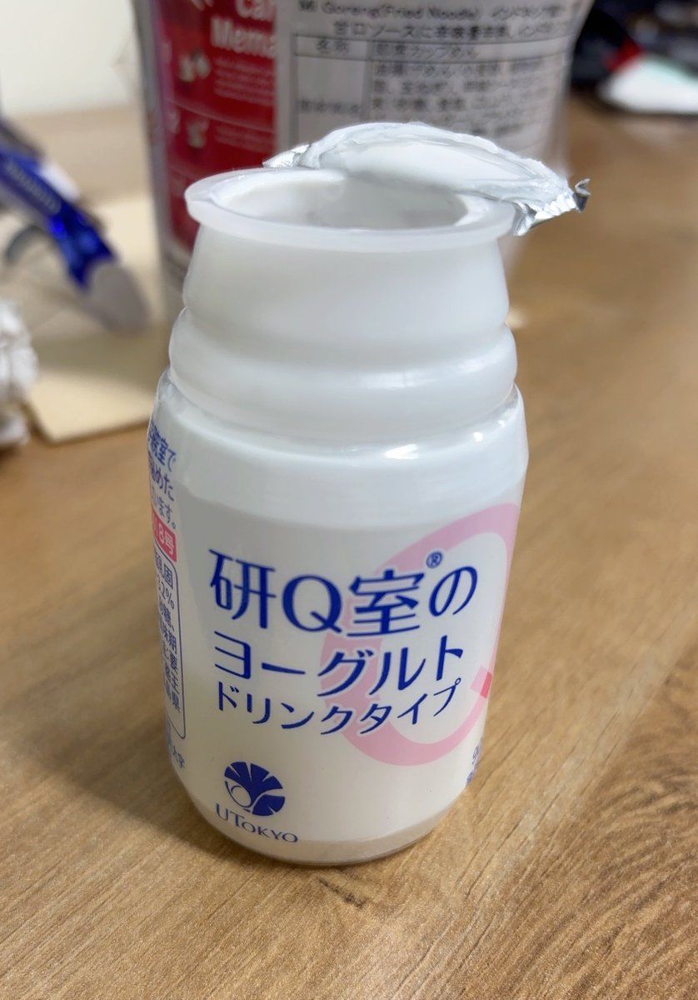

isla🐖
@IXXA00
@AyanoAsahina 干米饭好吃，你不许吃，给我吃

Ayano🥛
@AyanoAsahina
虽然前周五已经去挨拶过，不过今天还是到新地方的第一天。收到了来自学生的这样的见面礼，还挺好喝的。
毕业的时候生协的组合费忘记退了，发现居然还可以利用。
学食的米饭依旧有点干，不过我就是喜欢米饭噎嗓子的感觉，不知道有人懂没。
印度人的实验笔记看不明白…还会穿插一些印地面条文字，心累😮💨 https://t.co/5pFr92IpfP